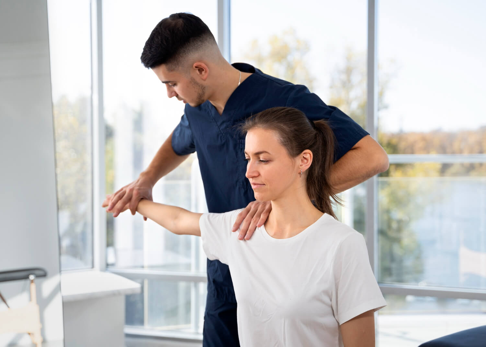

Atención kinesiológica especializada para adultos mayores y personas con movilidad reducida. Sin traslados, sin esperas. Tu recuperación, en casa.
Lo que ofrezco
Tratamientos adaptados a cada paciente, con el mismo nivel de calidad que una clínica, en el hogar.
Ejercicio terapéutico, equilibrio y prevención de caídas para adultos mayores en casa.
Tratamiento para ACV, Parkinson, esclerosis múltiple y otras patologías del sistema nervioso.
Rehabilitación funcional tras cirugías de cadera, rodilla, columna y fracturas.
Tratamientos con equipos de última generación aplicados en el domicilio del paciente:
Tratamiento kinésico para mejora de calidad de vida, independencia funcional y adaptación.
Plan de tratamiento adaptado con seguimiento continuo y comunicación directa con la familia.

Sobre mí
Soy Federico Fogliatto, Licenciado en Kinesiología y Fisiatría, egresado de la Universidad del Gran Rosario (IUGR), con más de 20 años de experiencia y especialización en Neurología. Me dedico al tratamiento y rehabilitación de adultos mayores y personas con discapacidad, convencido de que la mejor rehabilitación es la que ocurre en el propio hogar del paciente.
Testimonios
La confianza de las familias es el mejor indicador de nuestro trabajo.
"Solo palabras de agradecimiento por su atención, responsabilidad y profesionalismo. Acompañó a mi madre durante muchos meses en su rehabilitación, que no fue sencilla. Muchas gracias!"
"La atención y el compromiso para con el paciente es excelente. Las mejoras día a día fueron muy notorias. Son motivadores para que el paciente vuelva a tener confianza en sí mismo. Estoy muy agradecido."
"Excelente profesional, muy puntual y comprometido. Mi suegro pasó de silla de ruedas a andador y luego a bastón, todo a su debido tiempo y con mucha paciencia. Increíble evolución."
"Desde la primera visita sentimos que estábamos en buenas manos. Federico explica cada ejercicio con claridad y se nota que conoce muy bien a sus pacientes. Mi papá recuperó la movilidad mucho antes de lo que esperábamos."
Contacto
Completá el formulario y te contacto en menos de 24 hs para coordinar la primera visita.